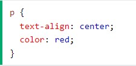
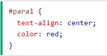
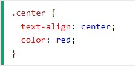
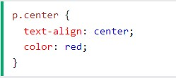
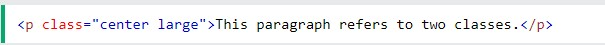

CSS
Significa Cascading Style Sheet(Hoja de Estilos en Cascada)
Es un lenguaje de definición de estilos que provee diseño y presentacion a la web
El codigo css se escribe en reglas de estilos, una regla se compone de las siguientes dos partes
- El selector al que se aplica la regla
- El bloque de declaraciones de estilos
Para dar estilo por medio de un selector lo hago mediante la siguiente marca
selector{
propiedad: valor;
otraPropiedad: otroValor;
}
TEMAS
Selectores
los selectores son cualquier etiqueta HTML a la que se laplica una regla CSS
Tipos de selectores
- Selector de etiquetas
- Selecotr de identificador
- selector de clases
- selectores universales
- selectores descendientes
Selector de etiquetas o elementos
El selector de elementos selecciona elementos HTML en función del nombre del elemento.

selector de identificador
Es cualquier etiqueta HTML que tiene asignado un valor en el atributo #ID. como dijimos anteriormente solo deben existir un solo id por selector.

selectores de clase
Es cualquier etiqueta HTML que tiene asignado un valor en el atributo "class".

Selector universal
Aplica los cambios a todas las etiquetas HTML con un atributo de clase específico
También puede especificar que solo los elementos HTML específicos se vean afectados por una clase.
Los elementos HTML también pueden referirse a más de una clase.
Pseudoclases
son estados de las etiquetas HTML, por ejemplo, accedemos mediante el punto delante de la clase ".etiqueta: Pseudoclases"
- Cuando tenemos el puntero sobre la etiqueta: hover
- cuando el elemento es el primer descendiente del contenedor: first-child
- cuando el elemento es el ultimo descendiente del contenedor: last-child
- cuando el elemento es el enécimo descendiente del contenedor: nth-child
Selector descendiente
el espacio en blanco en CSS es el selector de hijos descendientes. Aplica estilos al segundo selector, que es el descendiente del primer seleccgor, es decir el segundo que se encuentra contenido dentro del primero en la estuctura del documento HTML
COMPRAS
- Arroz
- azucar
- carne